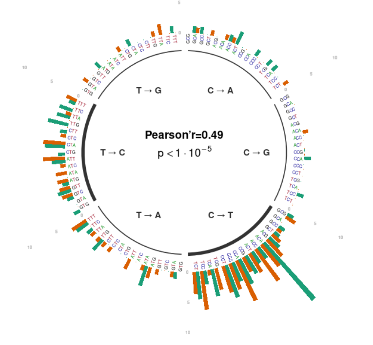

Thibault Leroy
Evolutionary biologist

In this work, we (Sylvain Schmitt, Myriam Heuertz, Niklas Tyskind and I) demonstrate that generic variant callers, commonly used to detect mutations in plants (but non only), are outperformed by methods developed for cancer research. Using these latmethods and thanks to the reanalyses of published oak data, Sylvain Schmitt identified up to 7x more somatic mutations than initially reported. We therefore consider that the marked differences in the performance of variant callers can explain the difference in the number of somatic mutations detected and, at the end, the discrepancies in genome-wide plant somatic mutation rate estimates reported in the literature. Sylvain also investigated the triplet mutation spectra based on the mutation detected in oaks (left).
Preprint (BioRxiv): HERE
Gil Yardeni's first chapter is just published. She compared the performance of the newly developed target capture set for Bromeliaceae (Bromeliad1776) to the universal Angiosperms353 kit. The taxon-specific set results in higher enrichment success across the entire family; however, the overall performance of both kits to reconstruct phylogenetic trees is relatively comparable, even for the study of a rapid evolutionary radiation. For more detailed phylogenetic or population genetic analyses, for example the exploration of gene tree concordance, nucleotide diversity or population structure, the taxon-specific capture set presents clear benefits. All this work is dedicated to our late colleague Christian Lexer.
Full paper: MER
or BioRxiv
I am a population geneticist, currently employed as a postdoctoral reserch at the University of Angers, France. My main current research project is focused on the breeding of roses during the 19th century.
Contact:
Thibault (Tibo) Leroy -
Email
Webpage Univ. Vienna (former lab)